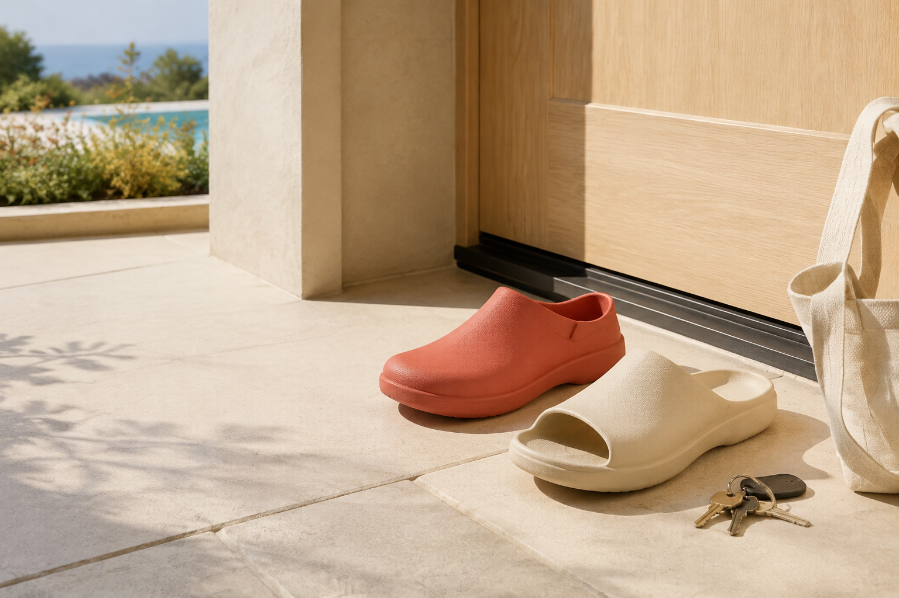
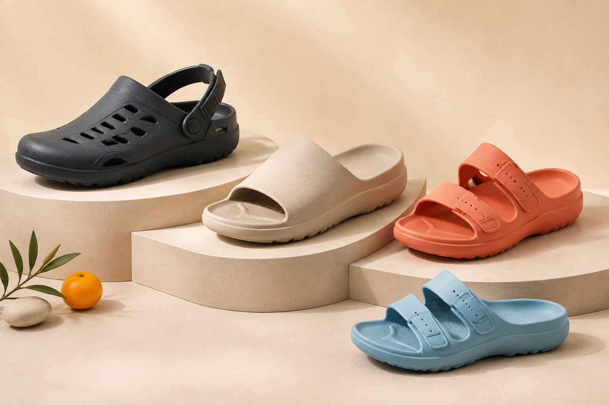
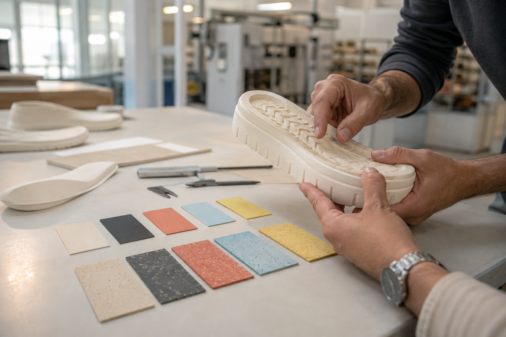

THE EVERYDAY HERO
Move Clog
A secure, ventilated clog for morning coffee, school pickup, airport miles, and everything in between.
MADE FOR THE EVERYDAY
Cushioned, washable comfort for coffee runs, dog walks, pool days—and wherever the everyday goes.

COMFORT, IN MOTION.
Designed for life
in America
THE STORY
AN EVERYDAY AMERICAN RITUAL
The day rarely starts with a dress code. It starts with coffee, a dog waiting by the door, or five minutes outside that becomes an afternoon. YOOYOS makes the pair that is already ready.
Soft underfoot.
Easy to clean.
Ready to be seen.
THE FIRST COLLECTION
We are beginning with a tightly edited family of everyday footwear—not the whole factory catalog. Each silhouette earns its place through a clear American use case.

CONCEPT IMAGERY · FINAL PRODUCTS IN DEVELOPMENTTHE EVERYDAY HERO
A secure, ventilated clog for morning coffee, school pickup, airport miles, and everything in between.
THE EASY-ON ESSENTIAL
A broad-strap, contoured slide built for quick transitions—from pool deck to pavement.
THE WARM-WEATHER ALL-ROUNDER
An adjustable two-band shape that brings an intentional fit to light, water-friendly comfort.
COMING NEXT Mini Move for kids and Cozy Clog for cooler days—after the first collection earns its next step.
THE YOOYOS APPROACH
No mystery language. No unsupported miracle claims. Just six product truths we intend to design, test, and explain honestly.
Soft where you want it, responsive where you need it—designed to stay comfortable beyond the first step.
Purposeful outsole texture for everyday transitions between home, sidewalk, pool, and pavement.
A considered heel cup and gentle arch shape support the foot without feeling overly engineered.
Natural bend through the forefoot with enough structure to keep each step feeling stable.
Water-friendly, quick-drying constructions made to rinse clean and return to the door.
Materials and details selected for repeat wear, changing weather, and the rhythm of real life.
A NEW POINT OF VIEW
In America, easy-on molded footwear goes far beyond the bathroom or backyard. It appears at the coffee shop, airport, campus, resort, garden, grocery run, and neighborhood walk. YOOYOS is built around that wider life.
“The everyday pair can still feel intentional.”
MADE WITH MANUFACTURING DEPTH
YOOYOS is owned and manufactured by Trizone, bringing experience across molded footwear, sandals, kids' products, and winter comfort. The American collection turns that broad capability into one focused brand system.

CONCEPT IMAGERYHOW WE GROW
American fit trials, original product details, material testing, and a disciplined color system.
Buyer conversations, selected U.S. footwear events, and a controlled digital introduction.
Kids, winter comfort, new colors, and broader distribution—guided by real feedback.
BUYERS · PARTNERS · PRESS
We are preparing the first U.S.-specific collection and building relationships with footwear buyers, retailers, event partners, and creative collaborators.
Start a conversation ↗Please confirm the launch mailbox before publishing.